Controladores Industriales (PLC)
La sección de Controladores Industriales se centra en la configuración y programación de los sistemas de control lógico programable (PLC) para la gestión y automatización de nuestra planta de producción cerámica. Comenzamos con un análisis detallado de los sensores necesarios para optimizar los procesos de producción, seguido de la creación de diagramas de flujo detallados para cada máquina, utilizando el método paso a paso y el estilo GRAFCET para una clara visualización y programación de los estados operativos. La programación de los códigos ladder, basada en estos diagramas, se realiza en Studio 5000, empleando subrutinas y saltos para estructurar el código principal en un entorno simulado con Logix Emulate. Este enfoque permite una integración efectiva y verificación de los PLCs antes de su aplicación real, asegurando que cada elemento del sistema cumpla con los requisitos operativos y de seguridad establecidos. Posteriormente, establecemos conexiones entre el software de simulación Siemens NX y TIA Portal para probar los PLCs en un entorno virtual, facilitando una transición suave hacia su implementación física. Este proceso exhaustivo garantiza una configuración robusta y eficiente de los sistemas de control, esencial para la optimización y seguridad de nuestras operaciones automatizadas.
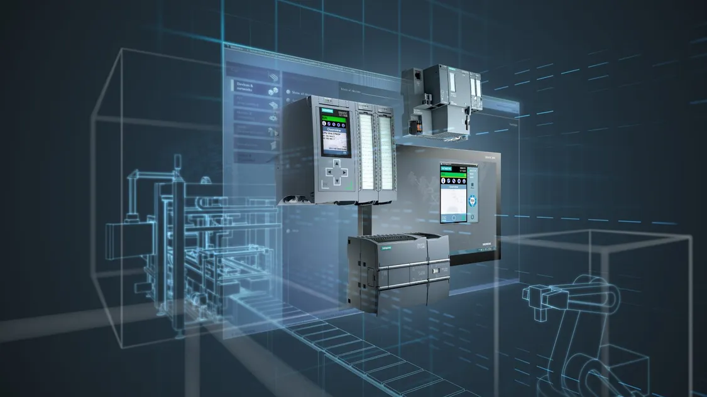
Controladores Industriales (PLC)
Hoja de ruta sensorica, Ladder y PLC
1. Planteamiento de los sensores a usar:
- Proceso: Se realizará un estudio para determinar qué sensores usar en la planta. Esto se basará en el nivel de detalle deseado, la disposición de la planta, la automatización planeada y la producción deseada.
- Requisitos: Disposición de la planta (nivel de detalle medio en qué máquinas se usan, cuántas y cómo funcionan), automatización planeada (énfasis medio en producción, funcionamiento de las máquinas, desplazamiento de productos y cantidad según el tiempo).
2. Planteamiento de los diagramas de flujo por maquinaria según el método paso a paso:
- Proceso: Se realizará un diagrama de flujo por método paso a paso para definir estados de la máquina y sus activadores. Esto representará el funcionamiento de cada máquina y los sensores asociados para modificar los estados de la máquina.
- Requisitos: Sensores planteados, máquinas y su funcionamiento.
3. Estructuración de los diagramas de flujo enfocados en GRAFCET:
- Proceso: Se reestructurarán los diagramas de flujo y se enfocarán en el estilo GRAFCET para lograr una mejor integración y comprensión del código.
- Requisitos: Diagramas de flujo método paso a paso.
4. Desarrollo de los códigos ladder:
- Proceso: Con base en el esquema enfocado en GRAFCET, se plantearán los esquemas en Studio 5000. Se usará subrutinas y saltos (JSR) para implementar un código principal (rutina main) en un PLC simulado con Logix Emulate, con la intención de simular el PLC virtual.
- Requisito: Diagrama enfocado en GRAFCET.
5. Según necesidad, selección de los PLC DCS o PAC a usar:
- Proceso: Se investigarán PLC capaces de cumplir con los requisitos y se seleccionarán los correspondientes, basándose en los requisitos del PLC, análisis de tiempos de rutinas, sensores seleccionados y análisis de potencia para los complementos.
6. Análisis de seguridad:
- Proceso: En base a los PLC elegidos, el código y el proceso, se realizará una consideración para sistemas redundantes y seguros con sensores y actuadores enfocados en la seguridad del entorno.
7. Reestructuración enfocada en seguridad y presupuesto:
- Proceso: Si se requieren modificaciones basadas en la seguridad junto con consideraciones económicas, se discutirán estas modificaciones. Se espera que sean menores.
- Requisitos: Análisis de seguridad y apoyo del análisis económico.
Análisis y Esquemas Grafcet
Para la implementación del controlador industrial se realizó un estudio de las etapas por las que pasa un producto en las diferentes estaciones y las dependencias. Partiendo de la línea de producción de forma secuencial, incluyendo medios de transporte, tenemos:

Partiendo de esta línea de producción, tenemos las maquinarias por las que pasa cada etapa del producto. Para el análisis de cada etapa, partimos del hecho de que cada etapa es independiente de las otras. Esto significa que ningún estado de las otras etapas debe condicionar la etapa actual, salvo por los sensores de posición de material que condicionan la entrada, salida y operación de cada etapa. Por lo tanto, realizamos un análisis conceptual de las posibles señales y los posibles sensores requeridos para esta etapa:

En este desglose simple de señales por maquinaria, incluyendo maquinarias de transporte, podemos empezar con el análisis por estación de trabajo, es decir, maquinarias sin incluir Bandas transportadoras. Para esto, partimos de que cada máquina tiene acceso a máximo 2 maquinarias de transporte, una de ingreso y una de salida. Por lo tanto, tenemos para las máquinas:
Silo de almacenamiento de materia prima:
En esta etapa, partimos de que el silo suministra materia prima mediante un dispensador, el cual se activa mediante un temporizador. Finalizado ese tiempo, se activa el transporte de salida, se detectan los sensores de salida y se repite el proceso de forma continua. Con lo que tenemos:
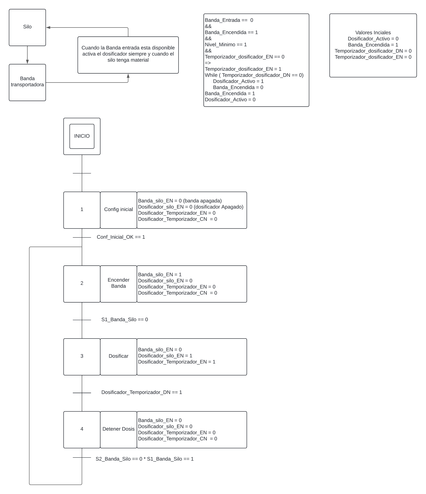
Prensa de materia prima:
En esta etapa, tomamos la materia prima, la cual es un polvo o una mezcla granular que ingresa en múltiples etapas de suministrado. Por lo que para este paso se hace uso de un contador que cuenta cuántas veces ha ingresado una tanda de materia prima a la prensa antes del prensado. Luego se realiza el prensado, que se mide en tiempo, por lo cual el prensado posee un temporizador. Al finalizar, tenemos la salida de la materia prima y el proceso vuelve a empezar desde el reinicio del contador:
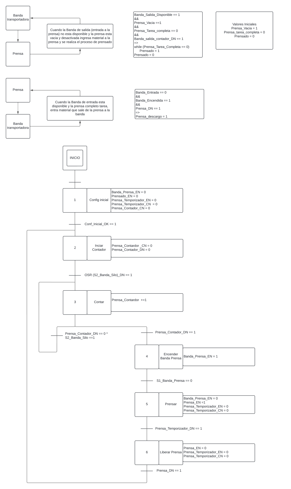
Secado de material comprimido:
En esta etapa, es necesario retirar la humedad presente en la materia prima comprimida. Para esto, se usa un secador. En este caso, se usa un secador continuo lineal en el cual la materia prima comprimida entra en un horno con temperaturas bajas y corto tiempo. Dentro del horno, hay bandas transportadoras que continuamente desplazan la materia comprimida desde la entrada a la salida. Este proceso es más simple porque solo se enciende el horno, se obtiene la temperatura objetivo e ingresa continuamente material. Por lo tanto, tenemos:
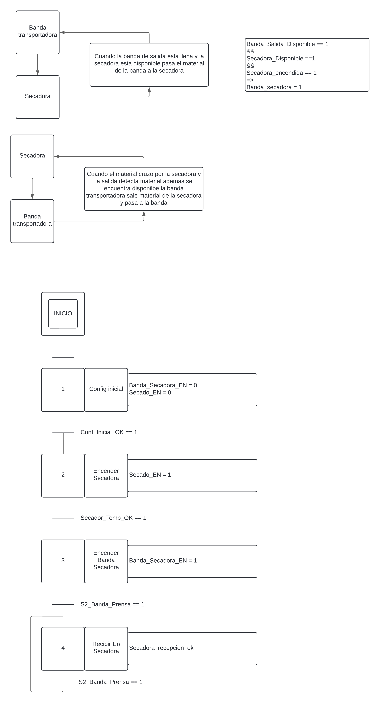
Engobe de baldosa:
En esta etapa, tenemos una máquina que recibe la baldosa, aplica una capa de engobe a cada baldosa. Esta etapa recibe el material, activa el proceso, termina el proceso de aplicación de engobe, luego se detiene el proceso, reactiva el paso de la baldosa a la siguiente etapa, recibe otra baldosa sin engobe y vuelve a hacer el proceso. Con lo que tenemos:
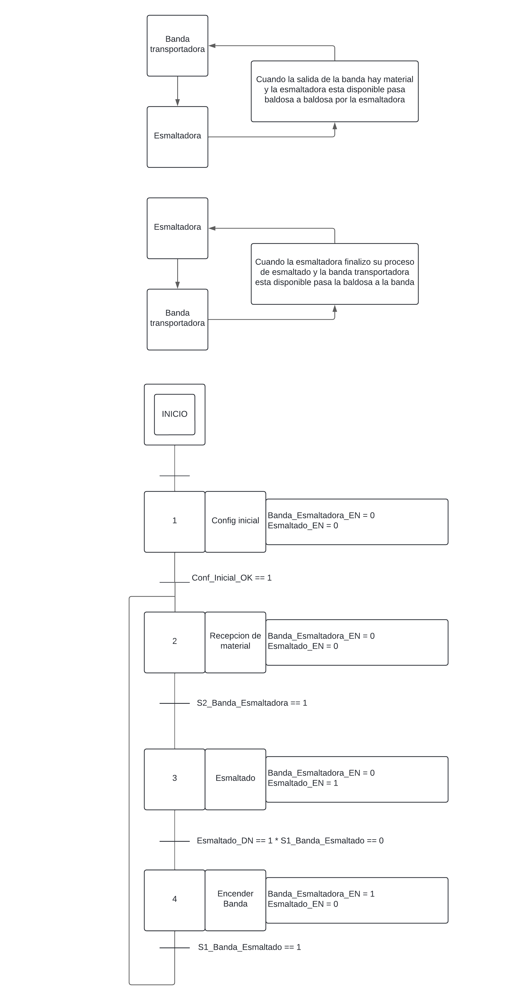
Impresión o aplicación de patrón de color:
En esta etapa, tenemos la aplicación del color mediante la impresora. Esta etapa, si bien es un proceso diferente, su funcionamiento secuencial es equivalente al de la esmaltadora. Por lo tanto, tenemos un esquema similar:
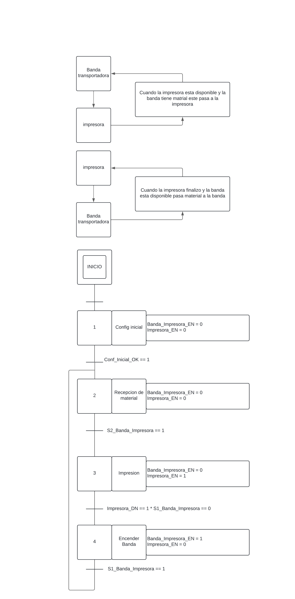
Esmaltado de baldosa:
En esta etapa, aplicamos la última capa de material sobre la baldosa, este es el esmalte. Este proceso es exactamente el mismo que el de engobe, ya que se realiza con la misma maquinaria o maquinarias similares. Por lo tanto, tenemos el mismo esquema:
Cocción de Baldosa:
Esta etapa calienta la baldosa cerámica a entre 900°C y 1200°C. Sin embargo, el proceso es el mismo que el realizado durante el secado, por lo que su esquema es muy similar al del secador:
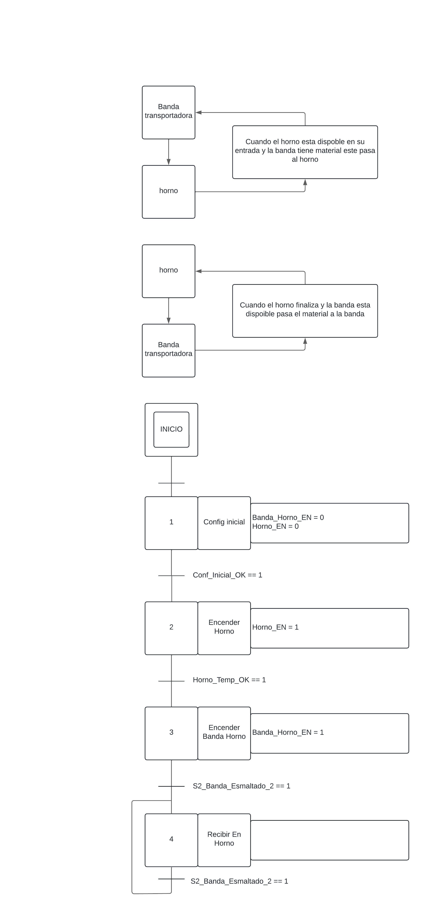
Diagramas Ladder:
En esta etapa, haciendo uso de los esquemas Grafcet y su sistema de etapas, se realizaron esquemas ladder secuenciales activados por y detenidos por secuencias. En este proceso tenemos:
Main Program:
Como planteamos al inicio, es necesario que las máquinas sean independientes de los estados de las otras. Por lo tanto, para el esquema ladder partimos de un Main Program que ejecuta los subprogramas de cada maquinaria:
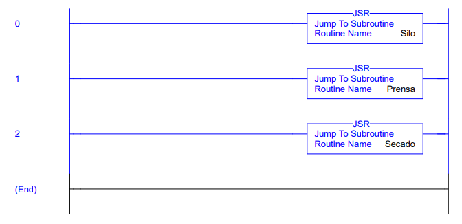
Silo SubRutina:
Para la máquina del silo, partimos del esquema en Grafcet previamente descrito y realizamos un código en dos secciones. La primera es la sección de estados, en la cual activamos y desactivamos los bits de memoria que se usan en cada estado de la máquina. En la segunda parte del código, tenemos la etapa de selector de estados. Esta etapa se encarga de seleccionar un estado de la maquinaria según corresponde con el conjunto de señales que permiten el salto de puntero en Grafcet. Partimos de una condición inicial para cuando se enciende la maquinaria y luego pasamos a los estados de trabajo indicados con el nombre de la maquinaria y el número del estado de Grafcet:
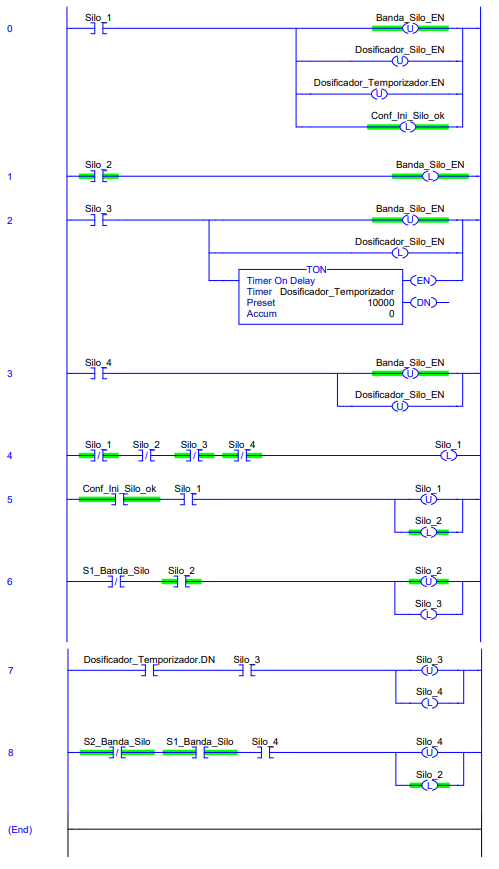
Prensa SubRutina:
Para esta maquinaria, tenemos un esquema con una bifurcación OR que nos permite decidir entre el estado de conteo y el estado de prensado. Esta bifurcación de conteo hace uso de un estado auxiliar debido a que para poder salir y volver a entrar en un estado para el esquema en ladder no es tan sencillo de programar, por lo que se hace uso de un estado temporal para permitir ese bucle de entrada y salida del mismo estado. Para la salida en OR, hay un bit de memoria que al activarse o no permite decidir entre un estado u otro:
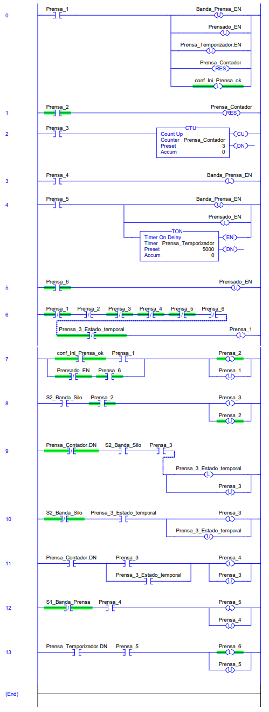
Secadora SubRutina:
Para el estado de la Secadora, tenemos un esquema simple con el último estado en bucle. Como en el estado final es un bucle sobre sí mismo, hacemos uso de un estado auxiliar para permitir la salida y reingreso sobre el mismo estado:
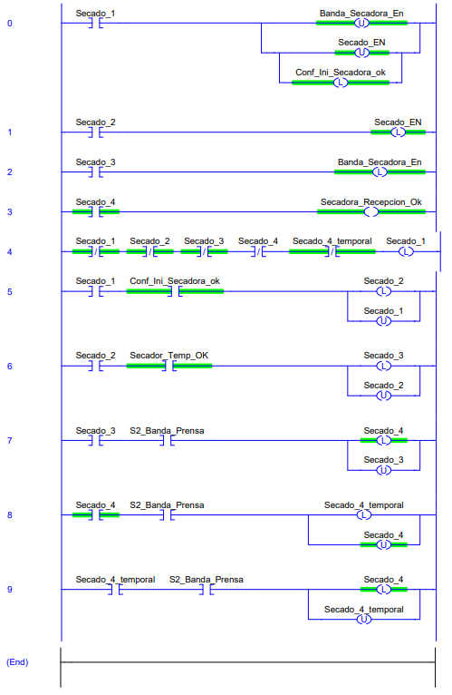
Otros diagramas:
Para el esquema del horno, tenemos que su similitud con el esquema del secador nos permite usar el mismo esquema pero con sus respectivos bits de memoria. Para el esquema de la impresora y los de las esmaltadoras, podemos partir del esquema del silo con sus respectivos bits de memoria gracias a su similitud.
Video de funcionamiento en Studio 5000 con Logix Emulate:
En este video podemos observar cómo las 3 lógicas funcionan en el código, haciendo uso de entradas simuladas al forzarse en el PLC virtual: